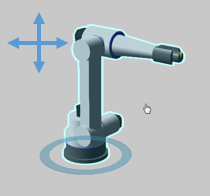
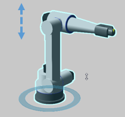
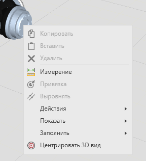
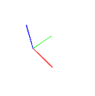

Это краткое руководство о том, как ориентироваться в трехмерном мире и чертежах.

Камера
С камерой трехмерного и двухмерного миров можно взаимодействовать с помощью мыши.
Вращение
Правая кнопка мыши (ПКМ) будет вращать камеру, но только в трехмерном мире. Почему? Чертеж — это двумерная среда.

Панорамирование
Левая и правая кнопки мыши (ЛКМ+ПКМ) будут перемещать камеру по горизонтальной и вертикальной осям области просмотра. Что такое область просмотра? Область просмотра — это экран/окно, отображающее симулируемую среду, такую как трехмерный мир.

Масштабирование
Для масштабирования камеры можно вращать колесо мыши или зажать SHIFT и правую кнопку мыши (SHIFT+ПКМ). Размер шага или коэффициент масштабирования можно изменить в настройках в разделе Общие.

По умолчанию камера будет приближать объекты, ориентируясь на центр интереса. Если вы не хотите, чтобы камера приближалась к центру интереса, вы можете изменить режим масштабирования в настройках в разделе Общие.
Центр интереса
Чтобы центрировать камеру, вы можете, удерживая нажатой клавишу CTRL, щелкнуть правой кнопкой мыши на объект в моделируемой среде.
Или щелкнуть правой кнопкой мыши на объекте выбрать в меню "Центрировать 3D вид"

Выбор вида
Ваш угол зрения в трехмерном мире обозначается плавающей системой координат и селектором просмотра в верхнем и нижнем левом углах области просмотра соответственно.
Плавающая система координат
Плавающая система координат представляет собой оси XYZ мировой системы координат.

Стандартные Виды
Для переключения между стандартными видами используйте селектор просмотра в нижнем левом углу области просмотра.
Вид сверху и вид снизу расположены на одном и том же квадрате: один щелчок - вид сверху, двойной щелчок - вид снизу. В виде сверху каждый щелчок будет поворачивать камеру на 45 градусов.
Прочие виды
Внутренние и внешние края стандартного вида можно использовать для выбора вида, смежного с двумя сторонами.
Углы стандартного вида можно использовать для выбора вида, прилегающего к трем сторонам.
3D Мышка
3D-мышь можно использовать для навигации по 3D-миру. Вы можете включить 3D-мышь и настроить ее в настройках в разделе Общие. При использовании 3D-мыши в области просмотра может появиться синяя точка, указывающая на центр интереса камеры.